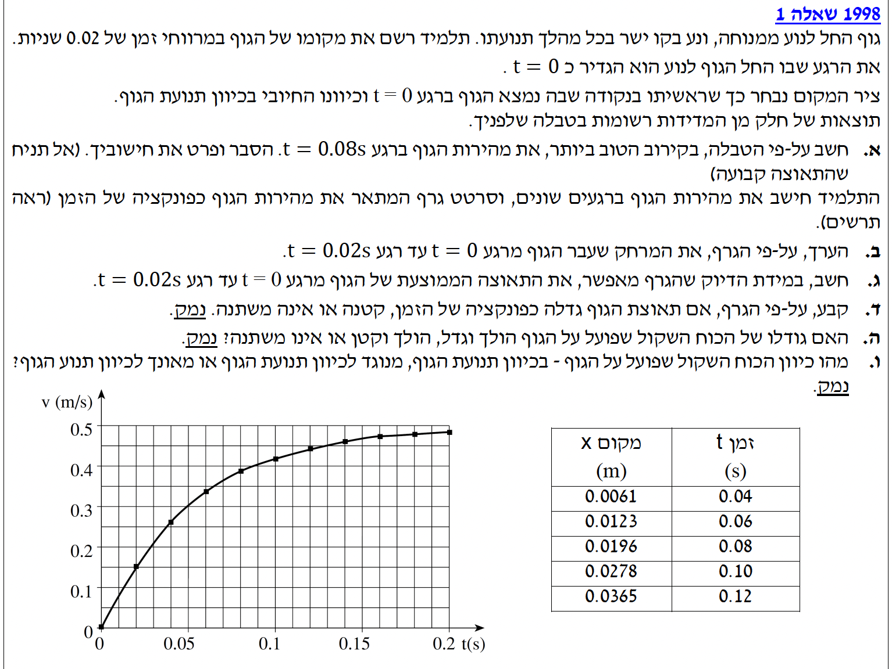

פתרון מוסבר: קינמטיקה ודינמיקה
בגרות בפיזיקה 1998, שאלה 1
פתרון מלא ומודרך: קינמטיקה, דינמיקה והסקה מתוך גרפים

חישוב מהירות רגעית מתוך טבלה
📌 מה נתון:
גוף נע בקו ישר החל ממנוחה (בזמן $t=0$, $x=0$, $v=0$). יש לנו טבלת ערכים של מקום ($x$ במטרים) כפונקציה של הזמן ($t$ בשניות).
שימו לב שיחידות המידה כבר במערכת MKS הסטנדרטית (מטר, קילוגרם, שנייה), ולכן אין צורך בהמרה.
🎯 מה מחפשים:
את מהירות הגוף בקירוב הטוב ביותר ברגע $t = 0.08\text{ s}$. מודגש לא להניח שהתאוצה קבועה.
✏️ הצבה ופתרון:
מכיוון שהתאוצה אינה קבועה, לא נוכל להשתמש בנוסחאות קינמטיקה של תאוצה קבועה. הקירוב הטוב ביותר למהירות הרגעית בנקודת זמן מסוימת הוא לחשב את המהירות הממוצעת בפרק זמן קצר וסימטרי סביב אותה נקודה.
נבחר מתוך הטבלה את הנתונים הנמצאים בדיוק צעד אחד לפני וצעד אחד אחרי $t = 0.08\text{ s}$:
- זמן התחלתי: $t_1 = 0.06\text{ s}$ המיקום הוא $x_1 = 0.0123\text{ m}$
- זמן סופי: $t_2 = 0.10\text{ s}$ המיקום הוא $x_2 = 0.0278\text{ m}$
תשובה סופית: מהירות הגוף ברגע $t=0.08\text{ s}$ היא בקירוב $0.3875 \text{ m/s}$.
הערכת מרחק מתוך גרף מהירות-זמן
📌 מה נתון:
גרף המתאר את המהירות ($v$ במטרים לשנייה) כפונקציה של הזמן ($t$ בשניות).
מהתבוננות בגרף, ניתן לראות כי:
בזמן $t = 0\text{ s}$ המהירות היא $v = 0\text{ m/s}$.
בזמן $t = 0.02\text{ s}$ (שתי שנתות קטנות בציר האופקי) המהירות היא כ-$v = 0.15\text{ m/s}$ (שלוש שנתות קטנות בציר האנכי, כאשר כל שנתה היא 0.05).
🎯 מה מחפשים:
הערכת המרחק שעבר הגוף מ-$t=0$ עד $t=0.02\text{ s}$.
✏️ הצבה ופתרון:
כדי למצוא את המרחק, עלינו להעריך את השטח הכלוא מתחת לגרף בפרק הזמן שבין $t=0$ ל-$t=0.02$ שניות.
אפשרות אחת היא לחשב את השטח של משבצת אחת בגרף: הציר האופקי הוא $0.01\text{ s}$ והציר האנכי הוא $0.05\text{ m/s}$. לכן שטח משבצת אחת הוא $0.0005\text{ m}$. ניתן לספור כי בקטע המבוקש יש בקירוב שטח ששווה ל-3 משבצות, כלומר $3 \times 0.0005 = 0.0015\text{ m}$.
אפשרות נוחה לא פחות היא להבחין שמכיוון שמבקשים "להעריך", ניתן לקרב את צורת השטח האמור למשולש ישר זווית (הגרף כמעט ישר בתחילת התנועה):
- בסיס המשולש (זמן): $\Delta t = 0.02\text{ s}$
- גובה המשולש (מהירות בסוף הקטע): $v = 0.15\text{ m/s}$
תשובה סופית: המרחק המוערך שעבר הגוף הוא $0.0015 \text{ m}$ (שהם 1.5 מילימטרים).
חישוב תאוצה ממוצעת
📌 מה נתון:
אנו עובדים בפרק הזמן $\Delta t$ מ-$t=0$ ועד $t=0.02\text{ s}$.
מהגרף קראנו את המהירויות: $v_1 = 0\text{ m/s}$ ו- $v_2 = 0.15\text{ m/s}$.
🎯 מה מחפשים:
את התאוצה הממוצעת של הגוף באותו פרק זמן.
✏️ הצבה ופתרון:
נציב את הנתונים שחילצנו מהגרף אל תוך הגדרת התאוצה הממוצעת:
תשובה סופית: התאוצה הממוצעת של הגוף היא $7.5 \text{ m/s}^2$.
ניתוח התנהגות התאוצה מהגרף
📌 מה נתון:
גרף המהירות כפונקציה של הזמן ($v-t$). הגרף מראה עקומה שעולה אך הופכת למתונה (שטוחה) יותר ככל שהזמן חולף.
🎯 מה מחפשים:
לקבוע ולנמק האם תאוצת הגוף גדלה, קטנה או אינה משתנה.
✏️ הסבר ופתרון:
על פי הגדרתה, התאוצה הרגעית מיוצגת על ידי שיפוע המשיק לעקומת הגרף בכל נקודה.
אם נתבונן בגרף המהירות הנתון בשאלה, נראה שבתחילת התנועה (קרוב ל-$t=0$) הגרף "תלול" מאוד, כלומר שיפוע המשיק גדול. ככל שהזמן מתקדם (למשל סביב $t=0.15\text{ s}$), העקומה הולכת ומתיישרת, והשיפוע הופך למתון יותר ויותר (קרוב לאופקי).
מכיוון שהשיפוע מקבל ערכים ההולכים וקטנים עם הזמן, הרי שגודל התאוצה הולך וקטן.
תשובה סופית: תאוצת הגוף כפונקציה של הזמן קטנה.
התנהגות הכוח השקול
📌 מה נתון:
מסקנתנו מסעיף ד': תאוצת הגוף $a$ קטנה עם הזמן.
מסת הגוף $m$ קבועה במהלך תנועתו (כמו רוב הגופים בבעיות קינמטיקה קלאסית).
🎯 מה מחפשים:
לקבוע האם גודלו של הכוח השקול הפועל על הגוף הולך וגדל, הולך וקטן או שאינו משתנה, ולנמק.
✏️ מתוך הנוסחה לפתרון:
על פי החוק השני של ניוטון, קיים יחס ישר בין התאוצה של הגוף ($\vec{a}$) לבין הכוח השקול הפועל עליו ($\Sigma\vec{F}$). כקבוע הפרופורציה משמשת מסת הגוף ($m$), אשר במקרה שלנו היא קבועה ולכן אינה משתנה.
היות והוכחנו בסעיף הקודם כי גודל התאוצה ($a$) הולך וקטן, מתחייב מתמטית ופיזיקלית שגם גודלו של הכוח השקול ($\Sigma F$) ילך ויקטן בהתאמה.
תשובה סופית: גודלו של הכוח השקול הולך וקטן.
כיוון הכוח השקול
📌 מה נתון:
מתוך הגרף, ערכי המהירות חיוביים (הגרף נמצא מעל ציר הזמן), כלומר הגוף נע בכיוון החיובי של הציר.
בנוסף, רואים בבירור כי גודל המהירות הולך וגדל לאורך כל זמן התנועה.
🎯 מה מחפשים:
את כיוון הכוח השקול הפועל על הגוף.
✏️ הסבר ופתרון:
כאשר גוף נע בקו ישר וגודל מהירותו עולה, החוקים הקינמטיים קובעים כי וקטור התאוצה חייב להיות באותו כיוון של וקטור המהירות (כיוון התנועה).
מאחר שהמהירות היא בכיוון החיובי, גם התאוצה היא בכיוון החיובי.
על פי החוק השני של ניוטון, כיוון הכוח השקול זהה לכיוון התאוצה. לכן מתחייב שהכוח השקול פועל גם הוא בכיוון החיובי.
תשובה סופית: הכוח השקול פועל בכיוון תנועת הגוף (הכיוון החיובי).
1. גודל המהירות עולה $\Rightarrow$ התאוצה היא בכיוון התנועה.
2. התנועה היא בכיוון חיובי $\Rightarrow$ התאוצה חיובית.
3. $\Sigma F = m a$ $\Rightarrow$ הכוח בכיוון התאוצה, ולכן הכוח פועל בכיוון החיובי.